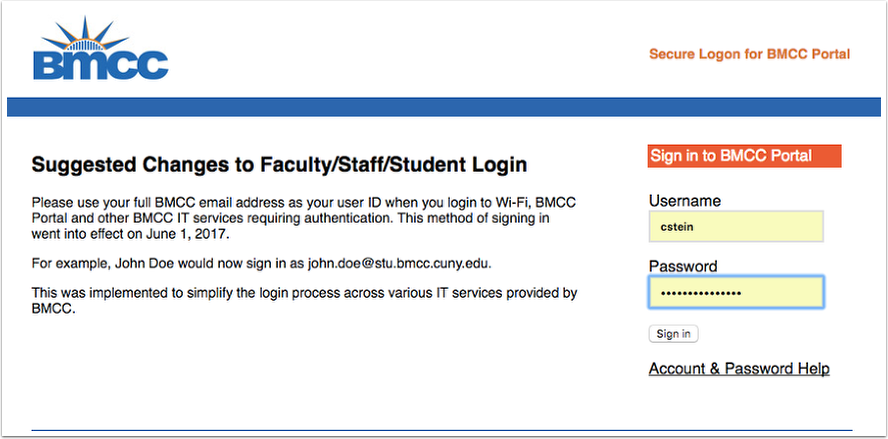
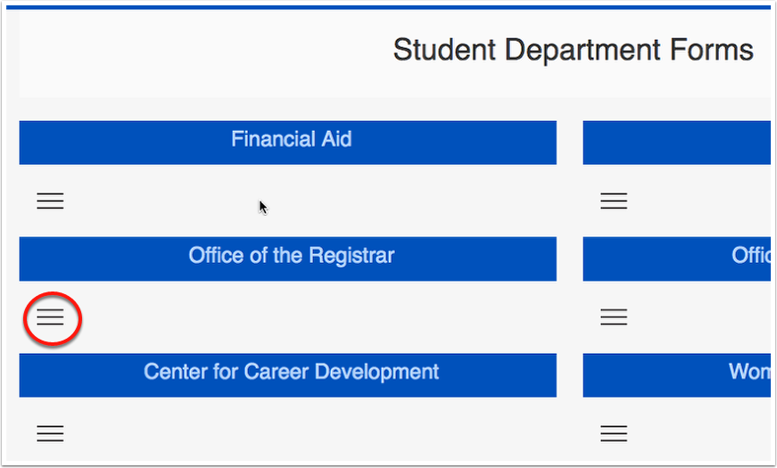
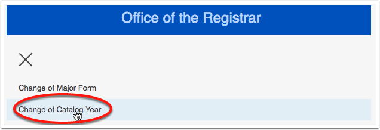

This process lets you change the catalog year of your major requirements. This is not a change of major. Why would you do this? If the requirements for you major change after you've chosen the major you will still be held to the old requirements. If you like the new requirements better and want to use the new major requirements then you can fill out this form.
Before completing this process you should talk with an advisor.
Go to the BMCC Portal
Sign in to the BMCC Portal

Click on the Student Forms Tile
Click to Expand the Office of the Registrar Forms

Click Change of Catalog Year

Fill out the form and Click Submit
You can make the New Catalog Year the most recent year available.